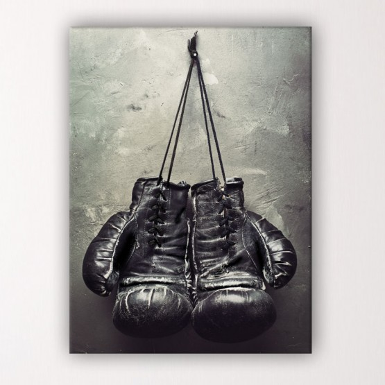
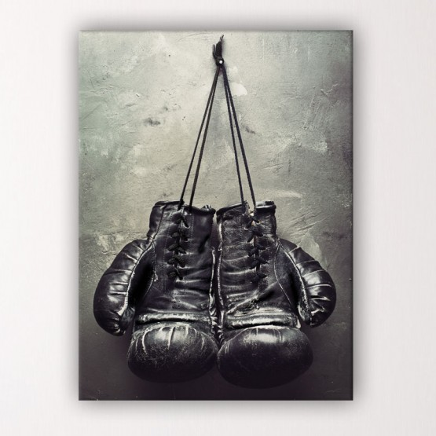

Qualité et nouvelle matière
Notre paire de gants a été testée et sa durée de vie a été doublée par rapport à des gants classique.

BoxingGloves a developpé un nouveau tissu en synthétique. Il permet une meilleure confortabilité et accroche.
Notre paire de gants a été testée et sa durée de vie a été doublée par rapport à des gants classique.

BoxingGloves a developpé un nouveau tissu en synthétique. Il permet une meilleure confortabilité et accroche.